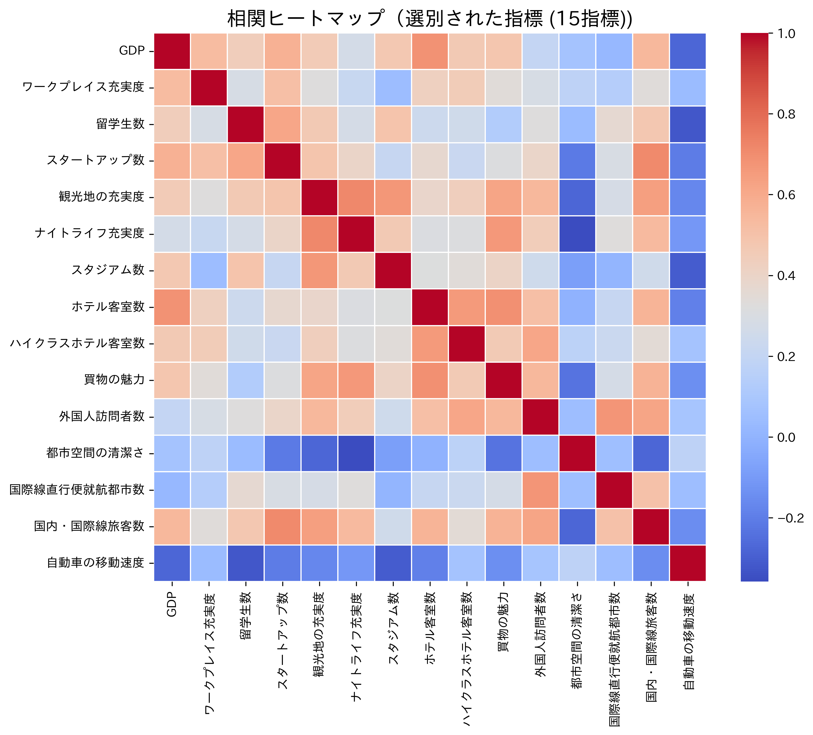

Tokyo Beyond 2050
都市の魅力
2つの構成要素
普遍的な魅力
Functionality
固有の魅力
Identity
都市の魅力



普遍的な魅力
- Functionality -
- 経済
- 研究・開発
- 居住
- 環境（量）
- 交通・アクセス
固有の魅力
- Identity -
- 文化・交流
- 環境（質）
指標一覧
| 魅力 | 分野 | 指標 |
|---|---|---|
| 普遍的な魅力 | 経済 | あああ |
| あああ | ||
| 研究・開発 | あああ | |
| あああ | ||
| 居住 | あああ | |
| あああ | ||
| 環境（量） | あああ | |
| あああ | ||
| 交通・アクセス | あああ | |
| あああ | ||
| 固有の魅力 | 文化・交流 | あああ |
| あああ | ||
| 環境（質） | あああ |